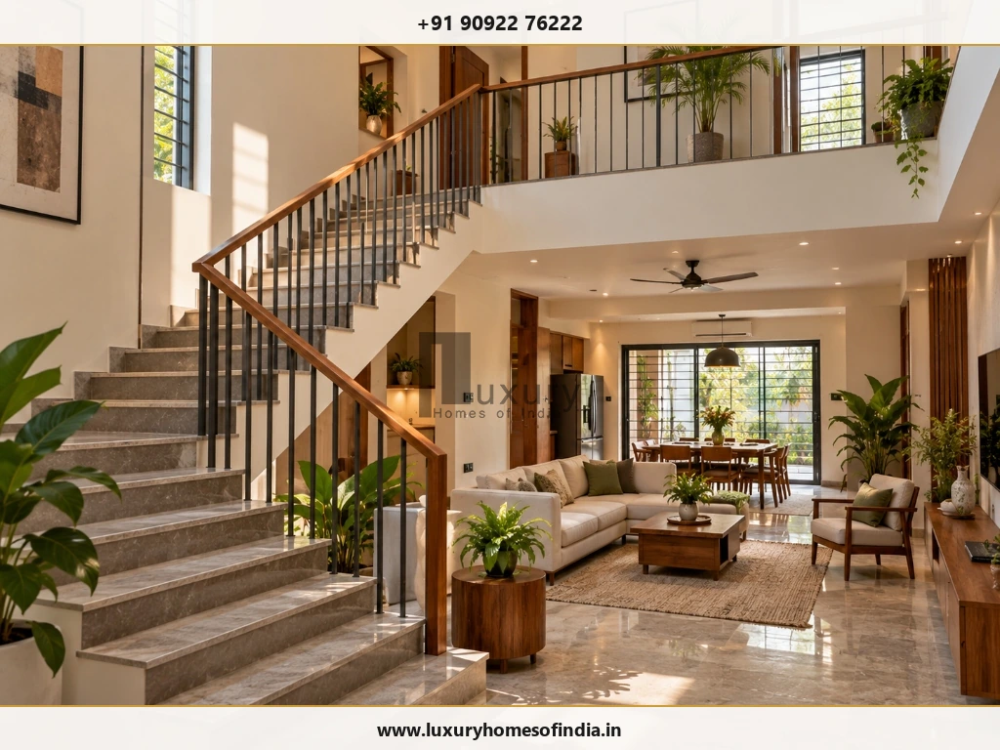
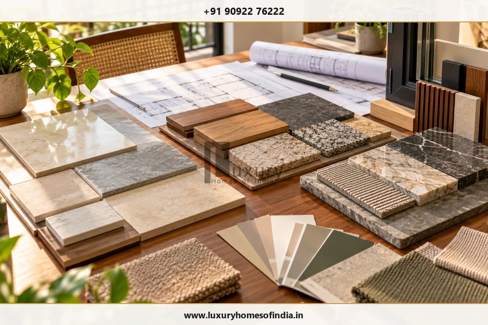
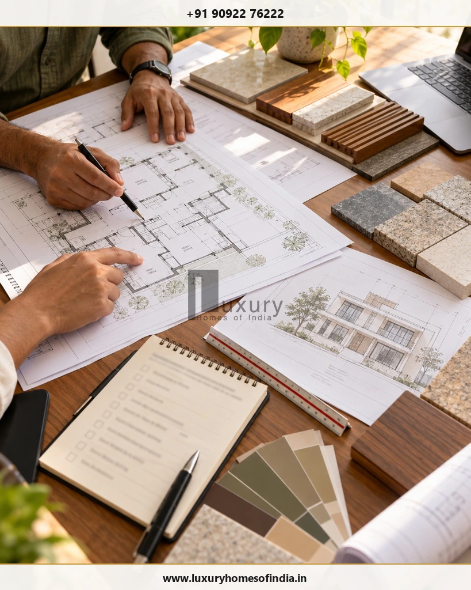

Executive Summary for Homeowners
The cost to build a duplex house in Chennai depends on its total built-up area, structural design, material specifications, interior finishes and the work included in the construction contract. For preliminary budgeting, this guide uses illustrative construction-only rates of ₹1,900–₹2,300 per sq. ft. for standard specifications, ₹2,300–₹2,900 for premium specifications and ₹2,900–₹3,800 or more for luxury specifications. These are planning assumptions drawn from the supplied draft, not verified LHI prices or guaranteed market rates. At these rates, a 2,000 sq. ft. duplex works out to approximately ₹38–₹46 lakh, ₹46–₹58 lakh or ₹58–₹76 lakh, respectively, before separately priced items. Your complete project budget may also include design, approvals, site preparation, compound walls, utilities, interiors, taxes and contingency. Before committing to construction, establish the permissible built-up area, confirm specifications and compare itemised bills of quantities (BOQs).

1. What Is a Duplex House?
A duplex house usually describes a home arranged across two connected levels. The term can also refer to a building with two residential units, so it is important to define the intended layout before estimating costs.
Common configurations include:
- Connected family duplex: One household uses both floors, connected by an internal staircase.
- Two-unit arrangement: Separate households occupy different floors, potentially requiring separate kitchens, bathrooms and access arrangements.
- Premium duplex residence: A two-level home incorporating selected architectural features, upgraded finishes and customised interiors.
The distinction matters financially. A home with two kitchens, additional bathrooms, separate utility provisions or independent access can require a different budget from a family home with shared services.

2. Duplex House Construction Cost in Chennai
The following figures are the working rate bands used throughout this guide. They should be validated against current local quotations and a defined scope of work before publication or use for financial decisions.
| Specification | Illustrative construction rate |
|---|---|
| Standard | ₹1,900–₹2,300 per sq. ft. |
| Premium | ₹2,300–₹2,900 per sq. ft. |
| Luxury | ₹2,900–₹3,800+ per sq. ft. |
A construction rate is meaningful only when its inclusions are clear. Two contractors can quote different prices because of differences in structural scope, material brands, floor finishes, electrical provisions, plumbing, waterproofing and exclusions.
When comparing proposals, ask each contractor to specify:
- The area measurement used for billing.
- Whether materials and labour are included.
- Structural, masonry and finishing specifications.
- Electrical and plumbing allowances.
- Whether design, approvals, taxes and external works are included.
- The items explicitly excluded from the quotation.
Note: Do not treat these rate bands as an official LHI price list.
Example: Construction Cost of a 2,000 sq. ft. Duplex
Assume a total built-up area of 2,000 sq. ft., divided into approximately 1,000 sq. ft. on each floor.
| Specification | Calculation | Illustrative construction cost |
|---|---|---|
| Standard | 2,000 × ₹1,900–₹2,300 | ₹38–₹46 lakh |
| Premium | 2,000 × ₹2,300–₹2,900 | ₹46–₹58 lakh |
| Luxury | 2,000 × ₹2,900–₹3,800 | ₹58–₹76 lakh |
These are arithmetic calculations based on the stated assumptions. They do not establish the final cost of a completed home.
3. Duplex Construction Budget by Built-Up Area
Use the following table to compare preliminary construction budgets for different home sizes.
| Total built-up area | Standard ₹1,900–₹2,300/sq. ft. |
Premium ₹2,300–₹2,900/sq. ft. |
Luxury ₹2,900–₹3,800+/sq. ft. |
|---|---|---|---|
| 1,600 sq. ft. | ₹30.4–36.8 lakh | ₹36.8–46.4 lakh | ₹46.4–60.8 lakh+ |
| 1,800 sq. ft. | ₹34.2–41.4 lakh | ₹41.4–52.2 lakh | ₹52.2–68.4 lakh+ |
| 2,000 sq. ft. | ₹38–46 lakh | ₹46–58 lakh | ₹58–76 lakh+ |
| 2,400 sq. ft. | ₹45.6–55.2 lakh | ₹55.2–69.6 lakh | ₹69.6–91.2 lakh+ |
| 3,000 sq. ft. | ₹57–69 lakh | ₹69–87 lakh | ₹87 lakh–₹1.14 crore+ |
Calculation basis: Standard ₹1,900–₹2,300/sq. ft.; premium ₹2,300–₹2,900/sq. ft.; luxury ₹2,900–₹3,800+/sq. ft.
The calculation uses the total built-up area across both floors. For example, a duplex with 1,200 sq. ft. on the ground floor and 1,200 sq. ft. on the first floor has a total built-up area of 2,400 sq. ft.
Check how the architect or contractor measures the area, particularly staircase areas, balconies, covered terraces and other spaces that may be treated differently under a particular quotation.

4. Plot Size vs Built-Up Area: What Should You Calculate?
Plot area and built-up area are not interchangeable.
- Plot area: The total area of the land.
- Built-up area: The covered constructed area measured according to the agreed area definition.
- Total project scope: May include external works, site services and other items outside the quoted built-up area.
A 1,200 sq. ft. plot does not automatically permit 1,200 sq. ft. of construction on each floor. Permissible construction depends on plot dimensions, setbacks, applicable development regulations, access, parking requirements and other site-specific conditions.
Before fixing your duplex budget:
- Confirm the plot dimensions and property documents.
- Have the site assessed by a qualified architect.
- Establish the permissible layout and built-up area.
- Finalise the intended room arrangement and number of floors.
- Calculate construction costs using the resulting area and agreed specifications.
Applicable planning and building requirements should be verified with the relevant authority and qualified professional before construction begins.
5. What Affects Duplex House Construction Cost?
Structural design and foundation
Foundation requirements depend on site conditions, soil characteristics, building loads and the structural design. Investigation and engineering requirements should be established before finalising the construction budget.
Do not reduce structural safety provisions, reinforcement, concrete specifications or necessary engineering work to achieve a lower initial quotation.
Materials and finishes
Material specifications can significantly influence the budget. Compare equivalent products and quantities rather than relying on general labels such as standard, premium or luxury.
| Work category | What to specify |
|---|---|
| Cement and reinforcement steel | Grades, quantities and design requirements |
| Masonry and plastering | Wall material, thickness and finish |
| Flooring | Tile, granite, marble or other selected finish |
| Doors and windows | Frame, glazing, hardware and finish |
| Electrical | Wiring, switches, lighting points and distribution |
| Plumbing | Pipework, fittings, sanitaryware and provisions |
| Painting | Surface preparation, primer and finish coats |
| Façade | Plaster, cladding, glazing and architectural features |
Staircase and double-height spaces
A duplex requires a connection between its floors. Staircase geometry, railings, finishes and the space allocated to circulation all influence the design.
Double-height living rooms, feature staircases and larger glazed openings can introduce additional structural and finishing requirements. Confirm their implications during design rather than treating them as late-stage upgrades.
Kitchens and bathrooms
A connected family duplex may have one kitchen, whereas two independent households may need separate kitchens and additional bathrooms.
Allow for waterproofing, sanitaryware, counters, ventilation, electrical points and plumbing routes. Clarify whether kitchen cabinetry, wardrobes and other interior fit-outs are included in the construction agreement.
Electrical, plumbing and utility systems
Plan lighting, power points, water supply, drainage, pumping and water-heating provisions for both floors.
If the building is intended for independent households, confirm the feasibility and requirements for separate metering and utility connections with the relevant service providers.
Elevation and premium features
Stone cladding, decorative finishes, façade lighting, glazing, pergolas, custom joinery and home automation may add to the project budget. Their cost depends on the chosen design and specification.
Prioritise features based on intended use, maintenance requirements and the budget available.
6. Additional Costs Beyond the Construction Rate
A per-square-foot construction estimate should not automatically be treated as the full cost of completing a home.
Depending on the contract and site, additional expenses may include:
- Architectural design and structural engineering.
- Soil investigation and site preparation.
- Applicable plan approvals and statutory charges.
- Compound wall, gate and entrance works.
- Underground sump, overhead tank and pumping systems.
- Borewell, sewer connection or septic arrangements, as applicable.
- Electricity and water connections.
- Modular kitchen, wardrobes and other interior fit-outs.
- External paving, drainage and landscaping.
- Lift, solar installation or home automation, if required.
- Applicable taxes, consultant fees and other contractual charges.
- Contingency for unforeseen conditions and approved changes.
A preliminary contingency allowance of around 10% of the estimated project budget may be considered during planning. The appropriate allowance depends on design maturity, site uncertainty and the contract. It is not a guarantee that all variations will be covered.
Related Reading: For related guidance, read our guide to hidden costs in house construction in Chennai.
7. Worked Example: A 2,400 sq. ft. Duplex Budget
Consider a hypothetical 2,400 sq. ft. duplex using an assumed construction rate of ₹2,500 per sq. ft.
| Budget component | Illustrative amount |
|---|---|
| Core construction | ₹60 lakh |
| Design, investigations and approvals | ₹3 lakh |
| Sump, compound wall, gate and external works | ₹5 lakh |
| Interior fit-outs and selected upgrades | ₹7 lakh |
| Subtotal | ₹75 lakh |
| Contingency at 10% of subtotal | ₹7.5 lakh |
| Illustrative total | ₹82.5 lakh |
The core construction calculation is 2,400 × ₹2,500 = ₹60 lakh. All other amounts are hypothetical budgeting allowances, not contractor quotations or verified LHI rates.
The example assumes that the listed components are not already included in another package. Check every quotation for overlaps and exclusions to avoid double counting.
The example excludes land purchase and any other unlisted expense. It is intended to show how a preliminary budget can be structured, not to predict the final cost of a specific project.

8. How to Control Duplex Construction Costs Without Compromising Quality
Finalise the design early
Frequent changes can cause rework, wasted materials and coordination problems. Confirm the principal architectural and structural decisions before execution.
Use an efficient floor plan
Organise rooms, circulation and staircase placement carefully. A practical footprint can reduce wasted space and simplify construction.
Prepare a detailed BOQ
An itemised bill of quantities identifies the work, quantities, specifications and rates. It also helps reveal missing items in competing proposals.
Coordinate drawings before execution
Resolve structural, electrical, plumbing, bathroom and kitchen requirements before the relevant construction stages begin.
Standardise selected finishes
A coordinated selection of flooring, door finishes, paint and fittings can simplify procurement while preserving the intended design.
Compare quotations on equal terms
A lower headline rate may exclude waterproofing, tanks, external works or selected electrical and plumbing provisions. Compare the same scope and specification.
Choose premium features deliberately
Spend on the features that matter most to the household and select suitable, durable specifications elsewhere.
Safety & Integrity Note: Protect essential quality requirements. Do not compromise necessary structural design, waterproofing, electrical safety or appropriate material specifications simply to reduce the initial quote.
Cost Optimization: For further guidance, read how to reduce house construction cost.
9. How Long Does It Take to Build a Duplex House in Chennai?
Construction duration depends on the design, approvals, site conditions, contractor programme, procurement and extent of interior work.
A provisional planning allowance of around 9–14 months from construction commencement to handover may be considered for some conventional duplex projects, but this range has not been verified against an LHI project schedule. Complex designs, difficult site conditions, material delays or extensive customised interiors can change the duration.
A typical construction sequence includes:
- Site assessment and design coordination.
- Applicable approvals and pre-construction preparation.
- Foundation and structural work.
- Masonry and service installations.
- Plastering, waterproofing and flooring.
- Doors, windows, painting and fittings.
- Kitchen and interior works, where included.
- Testing, inspections, defect correction and handover.
Timeline Details: For more detail, see how long does it take to build a house in Chennai? and our dedicated duplex construction timeline guide.
10. How to Choose a Duplex House Construction Company in Chennai
Look beyond the quoted rate. A useful construction proposal should clearly define the work, materials, responsibilities and payment terms.
Before signing an agreement, ask:
- Is the quote based on the total built-up area?
- Are materials and labour included?
- Which material brands, grades and finishes are specified?
- Are architectural and structural services included?
- Who coordinates approvals and inspections?
- Are waterproofing, tanks, compound walls and external works included?
- Are interiors priced separately?
- What is the proposed schedule and payment milestone plan?
- How are variations approved and priced?
- What quality checks, testing and defect-correction arrangements apply?
Request an itemised BOQ, relevant project references and a written agreement. Verify references and compare proposals with equivalent scope before deciding.
Builder Selection Guide: For related guidance, read how to choose a luxury home builder in Chennai.
Frequently Asked Questions
Plan Your Duplex House Budget Before Construction Begins
The cost to build a duplex house in Chennai depends on the area, design, structural requirements, materials, finishes and the scope included in the construction agreement.
A practical budget accounts for more than the core construction rate. Design, approvals, external works, utilities, interior fit-outs and contingency can all influence the final investment.
Before starting, confirm the permissible layout, finalise your specifications, establish the BOQ and compare quotations on an equivalent basis. This creates a clearer foundation for cost control and project planning.
Planning a Duplex Home with Luxury Homes of India?
If you are considering a duplex home, prepare your plot location, approximate built-up area, preferred specifications and current design stage before requesting a project-specific discussion.
Contact Luxury Homes of India
- Phone: +91 90922 76222
- Email: info@luxuryhomesofindia.in
- Address: #85, 4th Floor, Lotus Tower, Guindy, Chennai – 600032
- Website: luxuryhomesofindia.in
Disclaimer: All cost figures are indicative planning calculations, not a binding LHI quotation. Actual costs depend on site conditions, approved design, specifications, prevailing prices, taxes and contract inclusions. Obtain a site-specific estimate and professional advice before making financial commitments.